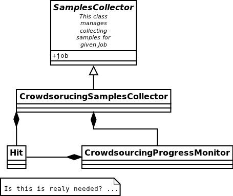

URLAnnotator architecture proposal
Overall view
This diagram presents general flow of the data

TrainingSetCreator generates mainly two events:
- TrainingSetCompleated
- TrainingSetUpdated
Simple event flow diagram

Database models
To minimalise overhead we decide to make access to DB non event based. Think if this will be thread safe?!
Job
- title
- owner
- description
- expected cost (maybe with distribution on separate parts)
- classifier parameters (like to use Google Prediction API or anything else)
- golden data - sample urls matching description provided by job creator
- status
- progress
- amount of URLs we want to collect ?
- additional parameters ?
Sample
- Job
- url
- text / content of the website
- screen-shot (probably some url address to S3)
Optionally also:
- source - normal_collecting / BTM etc.
- added_by - Worker
- added_on - date it was added
Worker
- name etc.
- estimated quality
WorkerQualityVotes
- worker
- sample
- vote/label ('correct', 'incorrect')
- added_on
GoldSamples
- Sample
- vote/label
Classifier
- Job
- type (like "Google API", etc.)
- parameters
Statistics
- stores some data about classifier performance
- date at which this statistics were calculated
BeatTheMachineSamples
Subclass of Sample?
- expected_output
- classifier_output
- error_ratio (maybe 1 - classifierProbab(sample_cls = expected_output) ?)
Component specification
SampleFactory
SampleFactor will be used after URLGathering stage and in Classifier External API. Probably this will be an EvenListener or wrapped by such.
This object given the URL will create Sample. It will delegate two tasks (each can be separate job / MachineTask on Tagasauris?):
- getting text content of the website
- making screen-shot of the website, uploading it somewhere (S3?), returning it url
XXX: How do we want this to do:
- in Tagasauris in the same job as in TrainingDataCollector
- in separate jobs on Tagasauris (each in separate or all in one)
- delegate this to some service
Classifier
Class abstract with methods (sample is of class Sample):
- new(description, classes)
- train(samples)
- update(samples) (optional - implemented with train if not provided by normal implementation)
- classify(sample) -> class
- classify_with_info(sample) -> dict with class and probability distribution over classes etc.
Implemented with:
- Google Prediction API
- some simple test classifier? (Orange library?)
Important notes
It should be implemented so that we could run multiple classify methods at the same time (thread-safety).
SynchronisedClassifier (optional due to Classifier247)
This class will be a wrapper around Classifier to make it synchronized in read/write kind:
- many calls can be done on classify methods at the same time
- only one train method can be called at the time and at this point no classify can be run/called
It should work that way:
- we allow classify normally
- when train comes we doesn't allow any classify and wait until all classify are gone
- do train and be gone
Optionally we could prioritize train to always push it to be done before any classify but this shouldn't be needed and could lead to starvation of classify
Classifier247
This classifier has two inner classifiers. Always one of them is providing methods related to classification. When trained we train this backup classifier and when ready it will be swapped with the one that is responsible for classification.
Notes:
- It must have lock on training classifier (we protect data, not methods).
- there is a lock on classification classifier with model readers-writer - writer does only swapping between classifiers
As someone noticed - this might be overkill. We could also create new one instead of using previous and swap with it.
ClassifierExternalApi
This will use SynchronizedClassifier and SampleFactory. Probably this will be done using REST. We will need to make locking queries with some timeout so that we can return with status "Currently unavailable - try again in few minutes"
What can go wrong:
- quota exceeded - we throw exception and depending on situation handle it properly. When we are at stage of collecting samples for training we should buffer them. If we are classifying for user some of his samples we will just present to him this information.
- Internal fail: like out of memory, dead service (when using Google Prediction) or just some crash due to some internal bug etc.
Classifier based on Google Prediction API
We will have to use Google Cloud Storage. Good source of information can be found: https://developers.google.com/prediction/docs/developer-guide I'm still not sure if we can use long texts as samples...
UML diagram

Caching note
We could cache classifier classification requests. We will have to invalidate them as classifier gets retrained.
ClassifierManager/Factory
This object is responsible for creating Classifier when new job is created based on its parameters. It also creates ClassifierEventListener and plugs it to proper event bus and just created classifier.
TagasaurisJobMonitor
This component will be responsible for checking Tagasauris whether:
- given job has finished
- some job results "arrived"
and makes proper event on such situations.
It also have to store mapping between Tagasauris job id's and our system ids.
Parameters
How often do we check and propagate changes.
TrainingSamplesCollector
This will use Tagasauris to collect samples and verify them also with Tagasauris and some qualityAlgorithm.
As input it takes job description be able to create proper Tagasauris tasks.
SamplesCollector
This component is responsible for collecting samples that after validation will be used to train classifier.
That way collected samples will be processed in SampleFactory
TODO NOTE maybe better name is with Simple? because we would like to distinguish it from Sample in terms of our DB.
Useful small elements
- exception QuotaLimitExceeded or/and event
Crowdsourcing package
This package provides tools that we will use in few parts of this system

CrowdsourcingProgressMonitor sends events about any progress.
SamplesValidation
We will make this work in two stages.
Voting
We will create voting job on Tagasauris and try to collect votes in chunks. As we get some samples we propagate EventSomeSamplesVoted.
Resulting votes are in form of WorkerQualityVotes - every entry contains sample, worker and label correct/incorrect/broken.
AlgorithmicValidation
After we get event SamplesPartialyValidated we get samples ALL samples from HumanValidation and run given algorithm on them.
At this point we can use:
- majority voting
- DS
- GAL
- DSaS
Result will consist of two elements:
- estimated workers quality (even for majority voting we can estimate this)
- estimated samples labels
Samples with labels are proper input to classifier
BeatTheMahine
This is just module SamplesCollector with Hit:TextualInput given different:
- Schema/Template
- EndCriteria
WorkerBlockingMechanics
It will require two DB tables:
- WorkersJobBlocked where we keep pairs (Worker, Job) which means that Worker is not allowed to participate in Job
- GloballyBlockedWorkers just list of workers which are blocked. This table is superior to previous so that if worker is in this table than we don't check the other one
Listens on events:
- EventBlockWorkerInJob(worker, job)
- EventBlockGloballyWorker(worker)
- EventWorkerGotContract(worker, job, contract_id) - if matches than sends EventCancelWorkerContract(contract_id)
Notes
Samples
We have few kind of samples:
- RawSample - url, source (BTM, normal), label/None
- HitSample - url, picture
- ClassifierSample - url, text
Sample that we use in our system has all fields that mentioned above have
TODO's
General TODOS
- Storage of training set and choosing samples ...
Readers/Writer access
There are some parts where we would like to have such synchronization or maybe copying. Problem is that we have evolving data structure and we would like to freeze it for the moment ..
- TrainingSamplesStorage
- Classifier
- WorkerVotesStorage
Implementation notes:
- Module with only Managers close to Events ...
Questions
- Scope of worker blocking?
- How to deal with "Readers/Writer access"
- smartly parts listen on events or we have some flow control which sends proper events as reaction to others?
Optional parts - mostly not finished
Revenue
Defines how much do we pay users for their jobs.
RevenueDefinition is mapping from (WorkerAction, result) into Money? This should be stored in some csv or json file so that it can be configured.
BeatTheMachineRevenueMechanics
Defines how much revenue will be given to worker for proving given sample. Components:
- RevenueType - describes whether we are satisfied with sample provided by user or not. Examples:
- TP or TN - no error - useless sample for us
- FP
- FN
- low confidence but correct
etc
- RevenueDefinition - mapping from
method reporterRevenue(classifier_difference ...) returns payback or
OLD - Needs checking what is still actual
Core components/services:
- JobPoster - Place which creates Job s with their descriptions, manages accounts, their balances etc.
- TrainingDataCollector - component that given description collects matching samples (in this case urls). It will do this by using crowdsourcing platform like oDesk
- DataValidator - it is mechanism that takes given url and label that it was assigned and checks whether this label is right. It will be used on data generated by TrainingDataCollector and potentially to measure classifier performance
- Classifier - binary classifier which will decide whether website given by url matches description attached to this Job
- BeatTheMachine - mechanism for constant validation of classifier with some new data - using crowdsourcing
EventBus
We might use at this point some existing library. Currently there are some assumptions that we hope that will work.
Event
Event contains:
- job_id
- type
- data
EventListener
Every object that is listening on a bus implements EventListener interface (I know this is not java - name is convenient) which has:
- method matches(event)
- notify(event)
Important Events
Global:
- NewJobStarted
- JobFinished
Job related:
- CollectedSomeTrainingSamples
- TrainingSamplesCollection{Started/Ended} (start is to make other components prepare for taking this samples - in this case is Validator)
- ValidatedSomeSamples
- ..TODO..
- Classifier{Created/Updated}
Elements plugged into the EventBus (described later):
- ClassificatorFactory(or Manager?)
- SamplesCollectionManager
- SamplesValidationManager
- BeatTheMachineStartManager
and also this elements registered on all kind of events:
- BusLogger
- BusErrorReporter (to sent errors to Sentry-like service, email etc)
Events handling and flow
EventCreateNewJob
- JobFactoryManager passes job details to JobFactory and it creates Job and its JobManager. Afterwards it pushes EventNewJobCreated.
EventNewJobCreated
Mostly we create Factories at this point.
It looks like this:
A_FactoryManager creates A_Manager, pases B details to A_Factory which creates A and plugs it into A_Manager. Afterwards it pushes EventNew_A_Created
In this fashion we work with:
- ClassifierFactoryManager with classifier details passed
- SampleFactoriesFactoryManager with job details
- QualityAlgorithm
- SampleCollector
- BeatTheMachineAutomaticStarterFactoryManager checks if given job want to use automatic start of BeatTheMachine and if so creates BeatTheMachineAutomaticStarterManager and passes proper parameters to BeatTheMachineAutomaticStarterFactory which creates BeatTheMachineAutomaticStarter and plugs it into BeatTheMachineAutomaticStarterManager
- TODO XXX What else
EventNewSampleFactoryCreated, EventNewClassifierCreated, ...?
- JobManager - after seeing this events it changes Job status to ready and sends EventJobReady
EventJobStarted
- TrainingSetCreatorManager calls TrainingSetCreator to start collecting training samples.
EventTrainingSetUpdated
- ClassifierManager calls Classifier to update itself on new data. ClassifierManager afterwards pushes EventClassifierUpdated
EventTrainingSetCompleated
- JobManager destroys TrainingSetCreator or does it destroys itself by unregistering from the bus?
NOTE: Maybe this EventTrainingSetCompleated and EventTrainingSetUpdated should be the same type so that ClassifierManager would be registered on one of theme?
EventClassifierUpdated
- StatisticsCollector collects stats and stores them in StatisticStorage, so that we could present some charts to the user.